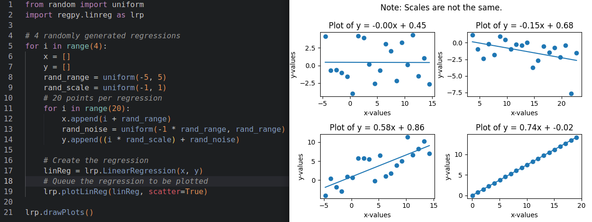
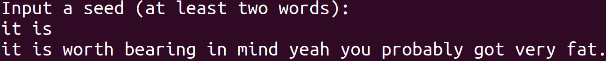
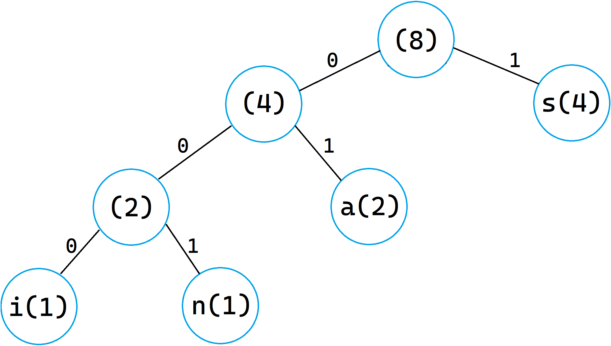

regpy
Creating and plotting regression models in Python made as quick and easy as possible.
Read more.This page will be updated with projects I feel like sharing or am currently working on, as they come.

Creating and plotting regression models in Python made as quick and easy as possible.
Read more.
Before deep learning, n-gram models were the common statistical method for generating surprisingly grammatical nonsense.

In 1952, David Huffman Sc.D. invented a simple, yet powerful, method of encoding information with minimal data usage. Today, it is most commonly used as a method for lossless data compression.